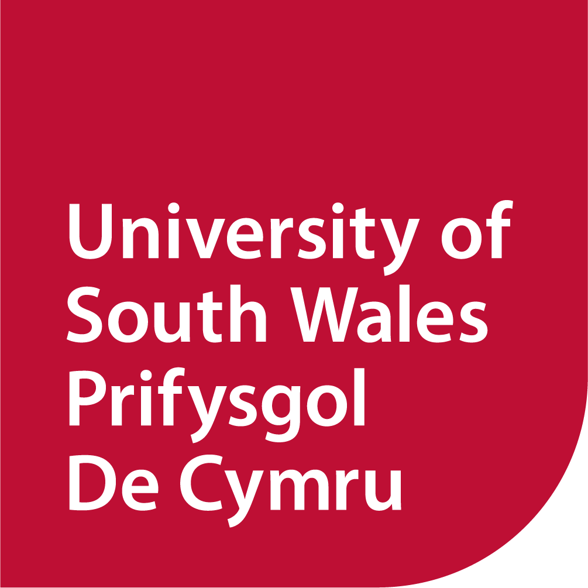

Gweithgaredd OSINT a Fforenseg Ddigidol PDC – Tasg Ymchwiliol

DARLLENWCH HWN
Mae'r gwefannau hyn wedi'u creu at ddibenion addysgol. Mae'r rhain yn flychau tywod am ddim sy'n cael eu lletya trwy GitHub. Ni ddylid defnyddio technegau a ddysgir mewn unrhyw sesiwn a gynhelir gan dîm Allgymorth Seiber PDC o dan unrhyw amgylchiadau ac eithrio ar gyfer cymryd rhan yn y gweithgaredd a amlinellir isod. Mae'r gwefannau yn ardaloedd diogel rhyngweithiadwy ac nid ydynt i'w hystyried fel mynegiant o wendidau mewn gwefannau neu wasanaethau go iawn.
Nid oes gan PDC unrhyw berthynas ag unrhyw sefydliad y gellir ei ddefnyddio at ddibenion arddangos, ac nid yw teitlau'r sefydliadau a ddefnyddir yn y gweithgaredd hwn wedi'u dewis fel rhan o unrhyw agenda neu bwrpas penodol.
Amcan
Mae eich tîm wedi'i neilltuo i dasg ymchwiliol sy'n gofyn am ddadansoddi tystiolaeth i ddarganfod manylion allweddol am darged. Mae'r wybodaeth sydd ar gael i chi wedi'i chyfyngu i'r hyn sydd wedi'i daflu. Eich nod yw cydosod manylion pwysig o'r deunyddiau a ddarperir a'u defnyddio i symud eich ymchwiliad yn ei flaen.
Gwefannau
Mae pob grŵp wedi'i neilltuo i wefan benodol i'w ymchwilio. Defnyddiwch y wybodaeth a ddatgelwch i gael mynediad.
Offer a Ddarperir
- 🧤 Menig sterile (defnyddiwch nhw wrth drin unrhyw ddeunyddiau)
- 💻 Cyfrifiadur gyda mynediad i'r rhyngrwyd (cyfyngedig i wefannau ymchwilio penodol)
- 📌 Byrddau pinnau a deunyddiau i drefnu canfyddiadau
Proses Ymchwilio
1. Archwilio Tystiolaeth
- Mae bag wedi'i ddarparu i chi sy'n cynnwys eitemau amrywiol. Gallai popeth y tu mewn fod yn berthnasol, felly archwilwch bob eitem yn ofalus.
- Cofnodwch unrhyw arweiniadau posib, gan gynnwys:
- Enwau
- Cyfeiriadau
- Rhifau ffôn
- Cyfeiriadau e-bost
- Derbynebau
- Tocynnau
- Nodiadau ysgrifenedig â llaw
- Unrhyw wybodaeth adnabod arall
- Tynnwch luniau neu gwnewch nodiadau o unrhyw beth sy'n ymddangos yn ddefnyddiol.
2. Ymchwiliad Digidol
- Gan ddefnyddio'r wybodaeth rydych chi wedi'i chasglu, ceisiwch gael mynediad i'r wefan ymchwilio benodedig.
- Efallai mai dim ond gyda'r cyfrinair y bydd rhai o'r manylion a ganfuwyd yn helpu. Bydd angen yr enw defnyddiwr A'r cyfrinair cywir arnoch chi.
- Dim ond y manylion mewngofnodi cywir fydd y cyfrifon ar y gwefannau hyn yn eu derbyn, sy'n golygu bod rhaid i chi sicrhau bod unrhyw fanylion a ddefnyddiwch yn gywir.
3. Dod o Hyd i Wybodaeth Allweddol a'i Thynnu
- Unwaith y cewch fynediad i'r gwefannau ymchwilio, eich tasg yw lleoli a thynnu darnau penodol o wybodaeth.
- Cofnodwch eich canfyddiadau a byddwch yn barod i egluro sut y cyrhaeddodd eich tîm atynt.
🚨 Nodyn: Dim ond y dudalen gartref a'r dudalen fewngofnodi fydd yn gweithio fel rhan o'r ymarfer hwn; mae tudalen olaf sy'n cynnwys y wybodaeth sydd angen i chi ei darganfod. Dim ond y tudalennau hyn sydd angen rhyngweithio â nhw ar gyfer yr her hon.
Rheolau a Chanllawiau
- ✔ Dim cydweithio rhwng timau: Gweithiwch o fewn eich grŵp yn unig — peidiwch â rhannu canfyddiadau â thimau eraill.
- ✔ Gwaith tîm: Gweithiwch ar y cyd, gan drafod eich canfyddiadau a'ch damcaniaethau.
- ✔ Dull Systematig: Byddwch yn fethodig yn eich chwiliad, gan sicrhau nad oes unrhyw gliw yn cael ei esgeuluso.
- ✔ Parchu Deunyddiau: Peidiwch â difrodi na thaflu unrhyw dystiolaeth. Rhaid dychwelyd yr holl ddeunyddiau ar ddiwedd y gweithgaredd.
Pob lwc, ymchwilwyr! 🚔🔍